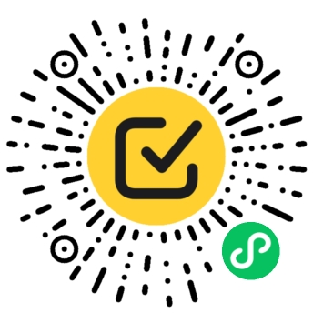

一个人，跟几条业务线
上午在 A 线评审，下午回 B 线改接口，晚上还要处理 C 线反馈。现场那句话可以先一句话收进来，不要求当场完成归类。
它服务的是 FDE（Forward Deployed Engineer，前沿部署工程师）：人在客户现场，需求来自不同角色，项目又在并行推进。Agent-ToDo 不替人做优先级判断，而是把判断需要的上下文留在原处。
上午在 A 线评审，下午回 B 线改接口，晚上还要处理 C 线反馈。现场那句话可以先一句话收进来，不要求当场完成归类。
口头需求、一线 bug、周会方向混着到来。先把输入留在胶囊里，再由你取舍、转译，把客户原话与项目背景一起交给 Agent。
正式交付按客户独立布设实例与数据。多项目并行指同一客户内的多条业务线；跨客户则是不同实例与入口，两件事不混在一起。
并行度越高，越容易在切换项目时丢失“上次停在哪、为什么这样定”。Agent-ToDo 把零散输入、方案结构、执行任务和交付回看放在同一条项目线上。
项目、待办和脑图保留各自位置，少靠聊天记录与印象还原现场。
语音、文字和截图先形成胶囊，整理时再归到对应项目。
用脑图拆开需求、决策与验收口径，不靠几段散文字传递方案。
待办导出同时带上方案层级、图片链接与关联的客户原话。
五条业务线可以各自处在不同阶段。现场记录可以很快完成，整理则按批次进行；不必为了清零胶囊而强行归类。
点「说」录一条，或点「写」输入文字并加截图，先不选项目。
主力：手机把胶囊单条转成待办，选择归属项目与紧急度；没想清楚的继续留下。
平板 / PC用脑图拆开需求、技术决策与验收口径，节点可拖动也可用语音改字。
平板 / PC把正文、脑图层级、图片链接和客户原话导出为 Markdown，复制给 Agent。
主力：PC完成待办、推进项目阶段，再从概览回看交付节奏与当前积压。
平板 / PC下面是一个典型情景示例。A / B / C 指同一家客户的三条业务线，共用这一套实例，但各自保留项目上下文。
B 线要改登录页文案，C 线报了一个 crash。分别录成胶囊，不在现场选项目或标紧急度。
把想清楚的内容逐条转成待办，挂到 A、B、C；暂时归不了的继续留在胶囊里。
在脑图里调整现状、改造点与验收口径；节点文字可以直接说，结构始终可见。
分别导出任务规格，不把三个项目的背景揉成一句“帮我改一下”。
客户原话仍关联在待办上，可以对照导出的内容补齐约束，再次交给 Agent。
从概览查看项目待办、四档紧急度和周期活跃度，决定明天先处理哪条线。
管理动作尽量嵌进原本就要做的事：记录、整理、画方案、写任务规格，而不是另维护一张进度表。
概览与项目页直接呈现当前存量和周期累计，不额外维护一套进度数据。存量会随完成、删除和改档变化，累计指标则用于回看周期节奏。
项目阶段回答“到哪一步”，综合紧急度把四档待办折成只读排序参考。
未完成、已完成和脑图数并排呈现，先判断这条线还欠多少。
跨项目查看紧急、较急、常规与暂缓，分辨“很忙”背后的具体任务。
按周与日查看胶囊、待办和脑图活动，回看这一周期的工作节奏。
剩余额度用于判断还能调用多少，重置天数用于判断何时进入下一周期。
从已有待办与关联上下文生成可核对的 Markdown，减少重复整理。
综合紧急度只用于排序，不会改待办；项目阶段是可编辑标签，不是自动流转的流程引擎。
手机当前只提供闪念胶囊与左滑操作，其余模块没有手机入口；平板和 PC 是完整工作台。每个模块都可跳到独立手册查看逐屏说明。
看这个周期的节奏。上半屏活跃热力，下半屏跨项目待办统计；用于判断先后，不直接修改任务。
先收进来，再决定归属。支持说、写与截图；单条可转待办，多选可删除或语义转脑图，也可关联到待办作为客户原话。
一个项目，一条交付线。同一客户的不同阶段可分别建项目；详情集中看待办、脑图、阶段与综合紧急度。
一件要交的事。只归一个项目，带四档紧急度；可关联胶囊、图片与一张脑图，再导出 Markdown 或使用信息增强。
把方案结构摆出来。提供六种格式，支持拖拽改父子关系、键盘或语音改字、节点配图，以及从多条胶囊语义生成。
看清账号与 Agent 资源。集中展示个人资料、Agent 套餐余额、重置时间与 Token API，模型功能可用额度以页面为准。
同一实例中的三端共享数据，但界面密度不同。下面的截图用于说明布局与操作位置，不表示各端截图来自同一时间或同一组演示数据。
整屏是胶囊流，底部保留「说」与「写」。当前没有底栏和其他五个模块入口，记录时不必同时面对项目、进度与统计。
列表从左侧浮出，详情留在右侧。换项目或换条目不需要反复退回列表，适合一次处理几个项目的胶囊、待办和脑图。
宽屏让项目统计和待办卡同屏呈现，适合跨项目检查积压、补全任务上下文，再逐条导出给 Agent。
手机端能力较少是当前产品边界，不代表其他模块的数据不可见；整理工作请在平板或 PC 完成。
语音编辑与 Markdown 导出分别对应“方案形成”和“任务交接”。模型辅助功能用于整理表达，输出仍需要人核对。
在脑图节点上直接录音，保持整棵树的结构可见；键盘编辑入口仍然保留。
导出内容按“待办正文 → 图片链接 → 脑图层级 → 关联胶囊”组织。信息增强用于重组表达，结果需人工核对，不写回原待办。
把审批流改成按工段走，先出接口草稿  # 审批流改造 ## 一、现状与卡点 ### 现在是一条线性审批，工段长没有节点 ## 二、改造点 ### 按工段拆并行节点，同工段内仍顺序审批 ### 车间 PDA 是安卓 7，不能要求客户端升级 --- 闪念胶囊 - 审批流能不能按工段走 - 他们车间的 PDA 还是安卓 7 - 月底盘点那两天不能停机
图片是否能在目标平台直接预览，取决于链接访问权限与平台渲染规则；对外分享前请先检查敏感信息。
当前公开入口是已上架的微信小程序演示实例。正式项目按客户独立部署，终端形态与升级节奏在交付时确认；演示数据不会自动进入正式实例。
扫码登录即可体验当前功能，数据在自己的演示账号下。功能会持续更新，演示数据不承诺长期保存，重要内容请自行导出。
按客户建立独立实例与数据库，使用独立入口和账号。H5 或原生 App 可作为交付时的终端选项，具体形态按项目环境确认。
独立实例用于隔离不同客户的项目、待办、脑图和现场记录；导出到其他平台后，应遵守目标平台的数据规则。
不同客户的实例可分别安排升级，避免一个客户的定制改动直接影响另一个客户。
同一客户的项目阶段、需求变化与客户原话持续保留，后续阶段接手时有据可查。
独立手册按十个章节组织：先理解三端分工，再逐模块查看操作顺序、界面元素、跨端流程、名词与手势。图片可放大，旧版手册深链仍然有效。
这里给出结论；具体操作与界面元素可在独立手册中按模块查看。
微信小程序已上架，扫码即可体验。这是演示实例，功能持续更新，数据不承诺长期保存；正式项目按客户独立部署。想先看清操作，也可以从完整手册开始。

微信扫码打开演示小程序，登录即可体验